Episdio
anterior | Prximo
episdio
Sinopse:
Archer e Tucker esto analisando
as cartas estelares cedidas pelo Alto Comando Vulcano, procurando
algum lugar interessante para visitar. Ao perguntarem a T'Pol
sobre um planeta sob jurisdio Vulcana, ela os informa de que
se trata de P'Jem, um santurio de meditao dedicado a prticas
como a do Kolinahr, em que os Vulcanos se livram de todas as suas
emoes.
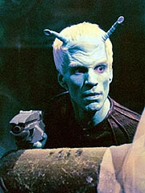
A
primeiro-oficial no recomenda a visita, mas Archer insiste e a
Enterprise vai at o planeta, visitar o monastrio. Chegando l,
o capito acompanhado por T'Pol e Tucker superfcie. Ao
adentrar o templo, eles percebem que o ambiente est
estranhamente quieto e algumas coisas esto fora do lugar. T'Pol
repara que o monge que os atende tambm parece um pouco agitado.
Ele diz que os visitantes precisaro partir, pois os monges esto
em seu Kolinahr comunal e no podem ser perturbados.
Archer comea a falar, gesticular e passear pelo salo de
entrada do santurio, tentando ganhar tempo para descobrir o que
pode estar havendo. Ao caminhar pelo recinto, ele percebe que h
um aliengena azul escondido por trs de um encosto de madeira.
Ele rapidamente sinaliza para Tucker e os dois pegam o aliengena
de surpresa, desarmando-o. Infelizmente, quando eles o fazem,
outros trs colegas azuis entram em cena, rendendo os tripulantes
da Enterprise.
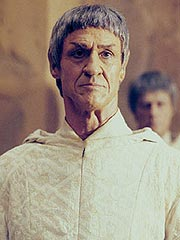
Eles so
todos levados junto dos outros monges Vulcanos a uma outra sala. L,
Archer informado de que os aliengenas so Andorianos, velhos
inimigos dos Vulcanos e uma raa agressiva e paranica. Eles esto
l procura de um poderoso equipamento de sensoriamento remoto
que, segundo eles, estaria monitorando as aes Andorianas para
uma futura invaso Vulcana de seu mundo. Shran, o lder
Andoriano, acha que a chegada da Enterprise est ligada s
atividades ilcitas dos Vulcanos e decide interrogar Archer --o
que, em bom portugus, equivale a tortur-lo.
O capito leva pancadas at dizer chega, mas diz que no sabe
de nada. A Enterprise tenta estabelecer contato com o grupo de
descida, mas no tem sucesso. Em vez disso, Shran se apodera do
comunicador e diz que o grupo est aprisionado e que se a nave
tentar qualquer movimento de resgate os refns sero mortos. Em
seguida, Shran destri os trs comunicadores. Malcolm Reed, no
comando da nave, no aceita essa situao e j comea a bolar
um plano de resgate para Archer, Tucker e T'Pol.
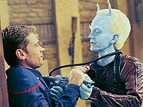
Enquanto isso, os
trs debatem sobre qual seria a soluo. Um dos monges oferece
um velho transmissor, que est guardado nas catacumbas do templo
e que no usado h muito tempo. O equipamento est com
problemas, mas nada que Tucker no consiga solucionar. Depois de
colocar o transmissor para funcionar, o engenheiro passa as instrues
de Archer a Reed --no interferir nem executar um plano de
resgate, pois o trio j estaria trabalhando l embaixo em uma
soluo.
No caminho pelas catacumbas, Tucker percebeu que uma passagem
tinha uma iluminao externa, vinda por trs cavidades na
parede. Ao relatar isso a Archer enquanto eles pensavam em um
plano, especularam que poderia ser uma ligao direta (os vos
dos olhos e da boca de um Vulcano esculpido na parede) entre a
sala de entrada, onde estavam os Andorianos, e os tneis. Para
testar essa idia, Archer conseguiu convencer os Andorianos a lev-lo
para o salo, onde ele lhes daria informaes importantes.
Entre socos e pontaps, Archer conseguiu chegar at a escultura
na parede e atirar um pequeno boneco pela boca. Mais tarde, Tucker
voltou s catacumbas e encontrou o boneco --era de fato uma
passagem.
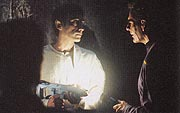
Archer
decidiu ento, sob protestos dos monges, usar o teletransporte
para trazer trs tripulantes da Enterprise, que entrariam nas
catacumbas e plantariam uma bomba na parede que as separava do salo
de entrada, surpreendendo os Andorianos. Reed e mais dois
tripulantes desceram e fizeram isso. Dois dos Andorianos foram
detidos, mas os outros dois conseguiram fugir pelas catacumbas.
Archer decide segui-los e os dois grupos se enfrentam em um relicrio
--um lugar sagrado onde, dizem os Vulcanos, ningum entrava h
geraes. O tiroteio quebrou vrias relquias e tambm fez
desprender uma cortina, que revelou uma enorme porta de metal.
Archer a abriu e, para a surpresa de todos, por trs dela havia
uma enorme instalao de alta tecnologia --exatamente o que
desconfiavam os Andorianos.
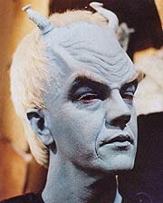
Vendo que os
Vulcanos de fato quebraram o tratado que tinham com Andoria,
Archer decidiu dar aos aliengenas as informaes que T'Pol
coletou a respeito da instalao. Um dos Vulcanos do monastrio
tenta impedir, ameaando matar o capito, mas facilmente
imobilizado. Shran parte com seus colegas, dizendo estar em dbito
com Archer pelo cumprimento da misso.
Comentrios:
Se voc queria ver as verdadeiras razes do nascimento
da Federao Unida de Planetas, ou se voc queria ver arcos
maiores, ligando vrios episdios, "The Andorian
Incident" uma excelente pedida. No s traz de volta
de forma consistente e coerente os Andorianos, uma das raas
"perdidas" da Srie Clssica, como tambm o
faz em um episdio plasticamente muito bonito e cheio de ao e
aventura.
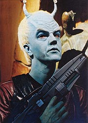
Este
segmento um contraponto a tudo que veio antes na srie (
exceo de "Broken Bow").
No s no um episdio feito para concluir todas as
ramificaes da histria em 45 minutos, como tambm no se
sustenta apenas em uma premissa simples e direta (os famosos
"high-concepts" de Brannon Braga). Aqui, preciso
muito mais reviravoltas, dilogos e eventos para mover a histria
--o que resulta em um episdio mais rico e qualificado que os
anteriores.
A sensao exata de v-lo como a assistir a uma aula de histria
ao vivo. Um dos maiores potenciais de Enterprise certamente
esse: oferecer aos telespectadores dos sculos 23 e 24 um
pouco do que teria levado ao futuro que todos conhecemos. Nesse
sentido (e provavelmente em qualquer sentido do termo), "The
Andorian Incident" at aqui o melhor episdio da
primeira temporada.
bem verdade que os Andorianos (e mesmo os Vulcanos) no
recebem uma caracterizao estupenda. Mas nesse caso esse
realmente no um problema. A idia desenvolver tudo isso
aos poucos, mostrando como essas raas acabaro saindo de um
estado de animosidade total para, em dez anos, estarem fundando
uma Federao Unida de Planetas. Mesmo assim, os Andorianos se
apresentam coerentes com o pouco que se viu deles na srie
original, e este episdio serviu apenas para abrir as portas para
esse novo mundo --Andoria.
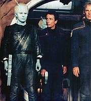
Prepare-se para
verdadeiramente conhecer essa raa durante Enterprise
--eles voltaro em "Shadows of P'Jem",
ainda na primeira temporada, e devem acabar pintando aqui e ali em
toda a srie. Olhando por esses termos, "The Andorian
Incident" foi um excelente modo de introduzi-los. E
Jeffrey Combs faz um bom trabalho interpretando Shran, o lder da
Guarda Imperial Andoriana que vemos neste episdio.
Os Vulcanos apresentam uma caracterizao um pouco complicada.
Por episdios como esse, uma pergunta que fica de onde veio
aquela inabalvel fama de que os Vulcanos so incapazes de
mentir? Aqui eles mentem deslavadamente, para os Andorianos e para
a tripulao da Enterprise. Seguramente, esses no so os
Vulcanos que vimos nas outras sries de Jornada. Essa raa
que aqui se apresenta muito mais sombria e errtica do que a
dos sculos posteriores.
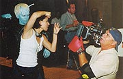
Por
outro lado, o fato de os Vulcanos estarem mentindo e de que havia
de fato um posto de observao em P'Jem nos leva um fascinante
mundo poltico que envolve as foras mais prximas da Terra no
quadrante Alfa. Ser "fascinante" (com o perdo da
expresso) ver como os Vulcanos justificaro suas aes e faro
para corrigir sua reputao e esse grave incidente diplomtico.
Com todas as repercusses que o episdio traz, no s para a srie
como um todo, como tambm para o nosso conhecimento do background
histrico de Jornada, impossvel no v-lo com bons
olhos. Pelas possibilidades que ele abre, deixou de ser apenas a
soma de suas partes. Critic-lo por pouco desenvolver os
Andorianos ou por deixar de fora esse ou aquele ponto um crime
--j que tudo isso deve acabar sendo abordado, a seu devido
tempo.
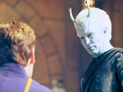
Alm dessas
importantes caractersticas do episdio, ele apresenta algo que
est se fortalecendo a cada episdio da srie: excelente interao
entre os personagens. Archer finalmente parece estar achando seu
lugar e, apesar de ser muito mais solto e inconsequente do que os
outros capites, comea a mostrar alguma inteligncia e
capacidade de liderana. Sua relao com Tucker sensacional
(veja a cena em que os dois desarmam o Andoriano, logo no comeo
do episdio), e T'Pol est se mostrando um bom elemento para
formar um novo "grande trio" la Srie Clssica.
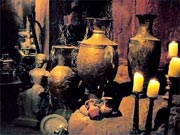
Archer,
T'Pol e Tucker cada vez mais se parecem com Kirk, Spock e McCoy,
mas as diferenas sutis que existem oferecem uma gama
completamente variada de situaes, de modo que no se trata
apenas de repetir o que j foi feito h 35 anos. Um dos fatos
que tem ajudado nesse sentido T'Pol ser mulher. Duas cenas
mostram bastante esse lado. Uma quando o capito oferece um canto
de cobertor primeiro-oficial, que depois de aceitar, acaba
roubando o cobertor todo para si, oferecendo um belo momento de
humor do episdio. O outro em que o capito manda um
intempestivo "Deixe-a em paz", quando um dos captores
Andorianos manifesta um interesse, digamos, especial por ela.
Alm do trio, que parece estar se afinando, tivemos a chance de
ver Malcolm Reed brilhar, no pouco tempo que teve de tela. A atuao
de Dominic Keating deve receber o crdito aqui --ele teve poucas
falas, mas o ator fez cada uma delas valer o mximo possvel.
interessante ver a abordagem de Reed no comando da Enterprise.
Confesso que por um momento torci para que ele fosse o capito, no
Archer.
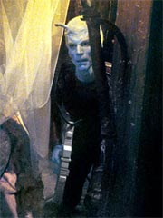
Hoshi Sato e
Travis Mayweather mais uma vez passaram batidos. E Phlox cada vez
mais se parece com uma Guinan que aparece todo episdio --o que
bom. Billingsley sabe interpretar o papel e a interao do mdico
com todos os personagens bastante interessante. Aqui, ele faz
apenas uma cena, com T'Pol, logo no incio do episdio, mas que
funciona maravilhosamente. Whoopi Goldberg deve estar orgulhosa...
O visual do episdio espetacular. A nova maquiagem Andoriana
conseguiu o impossvel: respeitar o visual semi-trash da Srie
Clssica e ainda assim tornar os Andorianos aliengenas
respeitveis. As antenas que se mexem contriburam bastante para
a redeno da maquiagem original. Os cenrios do templo e das
catacumbas beiram a qualidade cinematogrfica --com direito a mmias,
vasos, paredes, tneis e tochas que poderiam muito bem ter sado
de um filme de Indiana Jones.
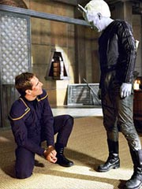
A direo
de Roxann Dawson extremamente competente. Algumas transies
so marcantes, como a em que Tucker dispe as pedras de forma a
ilustrar a iluminao na caverna e ento vemos uma transio
de cena que sobrepe as pedras aos olhos e boca do Vulcano
esculpido na parede da sala de entrada do monastrio. Gol de
placa. Outras cenas, como a em que os Andorianos vo verificar se
os prisioneiros esto todos l, munidos de lanternas,
esteticamente bonita e imprime bem o estilo opressivo dos aliengenas.
De crtica, s resta perguntar como um Vulcano apontando uma
arma colada nuca de Archer pode ser to rpida e facilmente
posto fora de ao com um murro. E relembrar a ltima frase de
Shran neste episdio: "Estamos em dvida com voc",
ele disse a Archer. Aguardamos ansiosamente o pagamento.
Citaes:
Tucker - "We're
supposed to be explorers, aren't we?"
("Deveramos ser exploradores, no?")
Archer - "That's the general idea..."
("Essa a idia bsica...")
Tucker - "What's the exploration in going to places other
people already have been?"
("Qual a explorao em ir a lugares onde outros j
estiveram?")
Shran - "Why did you come here? Answer me, pink skin!"
("Por que vieram aqui? Responda, pele rosada!")
Tholos - "I'll enjoy having you... as a prisoner."
("Gostarei de ter voc... como prisioneira.")
Reed - "I don't take orders from a comm voice, ensign. Not
unless that voice belongs to the captain."
("Eu no recebo ordens de uma voz em um comunicador,
alferes. No se essa voz no pertencer ao capito.")
Tucker - "For people without emotion, you should have a
flair for the dramatic."
("Para pessoas sem emoo, vocs devem ter uma queda para
o dramtico.")
Reed - "It's a console, ensign. It won't bite."
(" um console, alferes. No morde.")
Sato - "No, it will just scramble your molecules."
("No, apenas embaralha suas molculas.")
Vulcano - "I hope you're pleased, captain. You turned a
place of solitude into a war zone."
("Espero que esteja satisfeito, capito. Transformou um
lugar de tranquilidade em uma zona de guerra.")
Shran - "We are in your debt."
("Estamos em dvida com voc.")
Trivia:
 Esta a primeira apario dos Andorianos em Enterprise,
e mostra o primeiro contato dos humanos com essa espcie. Tambm
a estria de Roxann Dawson (B'Elanna Torres) como diretora da
srie.
Esta a primeira apario dos Andorianos em Enterprise,
e mostra o primeiro contato dos humanos com essa espcie. Tambm
a estria de Roxann Dawson (B'Elanna Torres) como diretora da
srie.
"O roteiro era fantstico", diz Dawson. "Tinha uma
sensao 'Caadores da Arca Perdida', aventura desenfreada,
humor e permitia aos atores terem interao entre os
personagens. Eu gostei de todas essas qualidades nesse roteiro e
certamente gostei de traz-las vida. No poderia ter ficado
mais satisfeita."
O elenco ficou bastante satisfeito de ter a veterana de Jornada
na direo. "Todos ns amamos. ela criou uma grnade
atmosfera para os atores trabalharem --tudo bem se
atrapalhar", disse Linda Park. "Seu forte era realmente
lidar com os atores e com a histria. Ela uma mulher adorvel,
sua confiana e silenciosa convico foram grandes coisas de se
ver --a nica diretora mulher que tivemos."
Jeffrey Combs, que j interpretou personagens recorrentes de
calibre em Deep Space Nine (Weyoun e Brunt) no pensava em
retornar a Jornada, mas no pde resistir ao papel.
"Enterprise ligou e perguntou se eu apareceria no episdio
cinco da nova srie. Eu estava reticente no incio, mas no fim
minha curiosidade acabou levando a melhor", diz Combs.
"Eu interpreto um Andoriano. Eles so uma raa introduzida
na Srie Clssica, mas no foram muito usados. Eles so
azuis com cabelo branco e antenas e uma diferena. Eles odeiam
Vulcanos."
Combs comentou como o trabalho de maquiagem influenciou sua atuao,
se comparada a outros papis que fez em Jornada. "Foi
mais exigente", disse. "Estou acostumado com as restries
da maquiagem, mas essa tinha cabelo, peruca, maquiagem, prteses
e tambm mecanismos para mover a antena. Ento eu tive de ser
ligado a um controle operado por rdio e tive isso acontecendo
tambm. Eu podia ouvi-las se mexendo --zooom-zoooooom (risos).
Isso afeta sua concentrao, mas no muito."
Brannon Braga tambm comentou sobre o novo visual dos aliengenas.
"Os Andorianos eram provavelmente os aliengenas de aparncia
mais boba em Jornada nas Estrelas. Ento pensamos que
seria legal atualizar a aparncia. Os novos figurinos e
maquiagens so extremamente impressionantes. Ns exploraremos um
pouco a cultura tambm."
Steven Dennis, que aqui interpreta Tholos, o Andoriano que vive
passando cantadas em T'Pol, j fez quatro papis em Voyager.
Um aliengena em "Night", Fennin em "Think
Tank", Onquanii em "Warhead" e o
tripulante Thompson em "Equinox, Part I" e "Equinox,
Part II".
Bruce French, o lder Vulcano de P'Jem, j apareceu em Jornada
como Sabin em "The
Drumhead" (A Nova Gerao), o mdico Ocampa
em "Caretaker"
(Voyager) e um oficial Son'a em "Insurreio".
Jeff Ricketts, outro Andoriano, apareceu em Enterprise
anteriormente, como o capito Axanar de "Fight
or Flight".
Ficha
tcnica:
Histria de Rick Berman
& Brannon Braga e Fred Dekker
Roteiro de Fred Dekker
Direo de Roxann Dawson
Exibido em 31/10/2001
Produo: 007
Elenco:
Scott
Bakula como Jonathan Archer
Jolene Blalock como
T'Pol
John Billingsley
como Phlox
Anthony Montgomery
como Travis Mayweather
Connor Trinneer como
Charlie 'Trip' Tucker III
Dominic Keating como
Malcolm Reed
Linda Park como Hoshi Sato
Elenco convidado:
Jeffrey Combs como Shran
Bruce French como lder Vulcano
Steven Dennis como Tholos
Jeff Ricketts como Keval
Richard Tanner como aprendiz Vulcano
Jamie McShane como oficial ttico